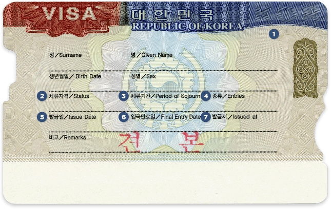
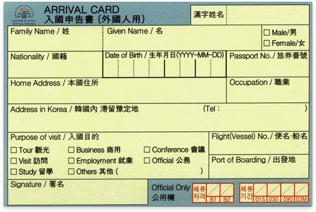

| 입국요건 |
대한민국에 입국하고자 하는 외국인은 아래와 같은 입국요건을 갖추어야 합니다.
|
|---|---|
| 비자의 종류와 유효기간 |
단수비자 : 유효기간 내에 1회에 한하여 입국할 수 있습니다.

대한민국 비자
|
| 입국신고서 |
대한민국에 입국하는 외국인은 대한민국 출입국항에서 출입국심사관의 입국심사를 받아야 합니다.

대한민국 입국신고서 |
| 외국인등록 대상 |
아래 외국인은 입국일로부터 90일 이내에 주소지를 관할하는 출입국·외국인관서에 외국인등록을 하여야 합니다.
|
|---|---|
| 외국인등록사항 변경 신고의무 |
외국인등록을 한 외국인이 아래 신고사유에 해당하는 변경이 있을 때에는 사유가 발생한 날로부터 14일 이내에 본인 또는 대리인이 관할 출입국·외국인관서에 외국인등록사항 변경신고를 하여야 합니다.
|
| 외국인의 활동범위와 취업 |
|
|---|